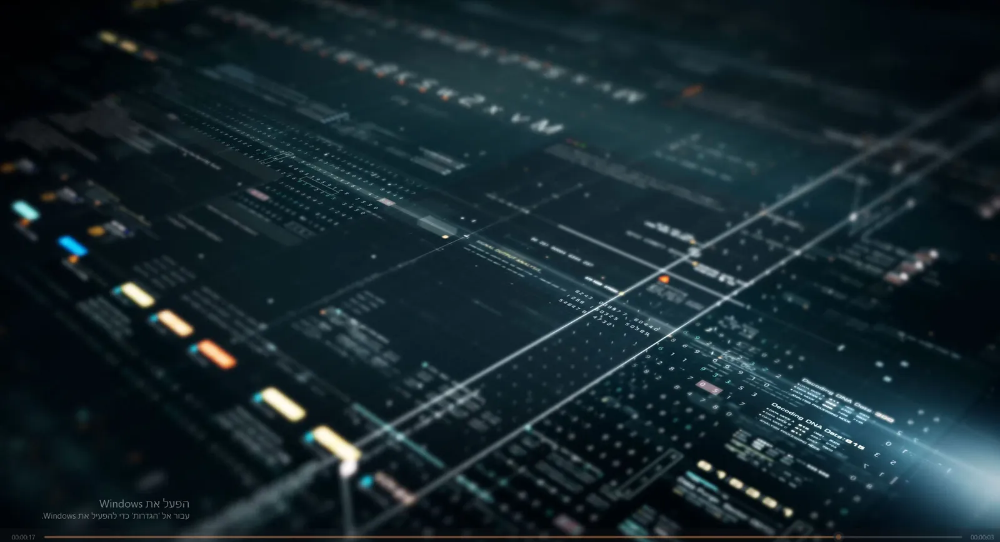

אירוח יישומים
Terminal Servicesהיישומים הארגוניים מותקנים על שרתי יישומים בחווה. המשתמש מתחבר כמסוף, והעיבוד מתבצע ישירות על השרתים.
אירוח יישומים ארגוניים בשרתים מרכזיים בחוות השרתים של ערדום, עם גישה מכל מקום דרך שירותי ענן. אתם עובדים, אנחנו דואגים לתשתית.
היישומים הארגוניים מותקנים על שרתי יישומים בחווה. המשתמש מתחבר כמסוף, והעיבוד מתבצע ישירות על השרתים.
משאבי המחשוב זמינים תמיד, בסביבת עבודה יציבה ואמינה.
גיבוי פיזי וגיבוי חשמל, מבואות תקשורת, אמצעי אבטחת מידע וניטור וירוסים.
שירות גיבוי נתונים רב-אמצעים, כך שהמידע שמור גם מחוץ לחווה.
סביבת Microsoft מלאה ושירותי דואר Exchange, כולל אירוח האתר התדמיתי של החברה.
גישה מאובטחת דרך האינטרנט לסביבת העבודה, והתחברות לשולחן העבודה האישי מכל מקום.

ערדום הקימה ומתחזקת עשרות רשתות תקשורת מקומיות בהיקפים שונים, כולל חברות מרובות אתרים וסניפים המקושרים כרשת אחת.
נשמח למפות את הסביבה שלכם ולהציע פתרון אירוח, גיבוי ותמיכה שמתאים לכם.